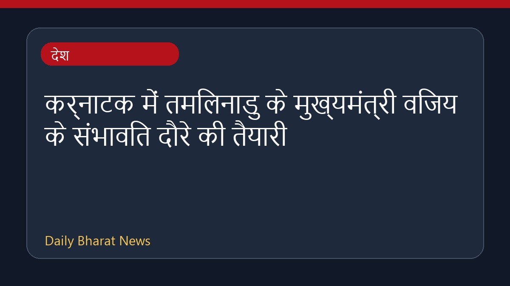

कर्नाटक में तमिलनाडु के मुख्यमंत्री विजय के संभावित दौरे की तैयारी

कर्नाटक में तमिलनाडु के मुख्यमंत्री विजय के संभावित दौरे को लेकर तैयारियां शुरू हो गई हैं। इस बीच, कर्नाटक के मुख्यमंत्री ने उन्हें हेलीकॉप्टर से कावेरी बांधों का निरीक्षण करने का निमंत्रण दिया है। दूसरी ओर, मांड्या में कन्नड़ कार्यकर्ताओं ने कावेरी मुद्दे पर विरोध प्रदर्शन तेज कर दिया है और तमिलनाडु के मुख्यमंत्री विजय की फिल्म 'जन नायकन' की स्क्रीनिंग रोक दी है। इसके अलावा, केंद्रीय जल आयोग ने कर्नाटक की मेकेदातु रिपोर्ट वापस लौटा दी है और संशोधित योजना में बदलाव पर आपत्तियां जताई हैं। पिछले दस वर्षों में कर्नाटक द्वारा तमिलनाडु को अतिरिक्त कावेरी पानी छोड़े जाने की खबरें भी सामने आई हैं।
मूल स्रोत: India News Sources
Karnataka getting ready for Tamil Nadu CM Vijay’s possible visit - The Hindu ↗
Karnataka getting ready for Tamil Nadu CM Vijay’s possible visit - The Hindu ↗